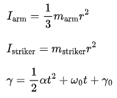
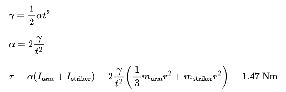

Design Decisions
Overview of Puckinator Design Decisions
Design Process
At the beginning of the project we came together as a team and ideated on different directions our project could take. From this ideation, we were able to make overall project design decisions based on our learning and project goals. Namely, the main decision we made was to create a parallel SCARA . After this, individuals involved in each subsection of the project (mechanical, electrical, software, firmware) were able to make design decisions that best fit the project. Additionally, throughout the project there were issues that surfaced that we had previously not considered. This led to us making smaller design changes to mitigate these issues.
Mechanical
Parallel SCARA:One of the largest architectural decisions in the scoping and design of this project was the use of a parallel SCARA. SCARA stands for “Selective Compliance Assembly Robot Arm” — a name that dates back to the SCARA’s origins in industrial manufacturing settings.
A large number of factors went into the choice of a motion system for our project, so we utilized a decision matrix to help us make sense of everything. We assessed each potential motion system in the following categories:
Actuator count: The number of stepper motors or servos required was a major driver of cost and complexity, so with a limited budget and limited time, limiting actuator count was important.
Movement accuracy: Although not demanding of incredibly high accuracy, the accuracy of the end effector must be good enough to consistently hit the puck where it’s intended.
Movement speed: The puck can travel across the table incredibly fast (~100ms) when hit hard by a human. This meant that every single part of our system had to be optimized for speed wherever possible.
Software risk: The difficulty of performing any needed inverse kinematics math was a significant risk to implementation for some options.
Play area view: Gantry-style systems have the potential to obscure the playing area with moving axes which might hurt the ability of the system to detect the puck.
Learning goals met: This takes into account the fact that some members of the team were interested in learning more advanced controls math and inverse kinematics as a part of the project.
MVP risk: Is there a way to easily make a simpler version of the system that can be scaled up later on?

The parallel SCARA is driven by two stationary motors that drive the input links of a 5-bar linkage. The stationary motors allow the arm to have an extremely low moving mass which translates to extremely high accelerations. Shown below is a close-up of our implementation of the system.

Nema 23 Steppers and 3:1 Gearbox
Before ordering any parts for our project, we experimentally determined the minimum amount of time it would take for the air hockey puck to reach a reasonable hitting distance from where a player strikes the puck using a full-size air hockey table on campus. This was found to be approximately 0.25 seconds. Our arm setup at that point in time was a single arm and motor that only moved radially. From this, we decided that an acceptable amount of time for a striker mounted at the end of the single arm to move through its full range of motion (defined by the angle γ) would be 0.15, since the table we chose would be smaller and the minimum amount of time also therefore smaller. We simplified the system down to a cylinder with a point mass at one end rotating about its other end to calculate the necessary amount of torque to achieve this reaction time. We approximated the maximum angle of rotation (γ) to be 90 degrees.
Angular velocity and angular position are assumed to be zero in this case to optimize for the worst-case scenario.
Once we plugged in time required, maximum angle of rotation, arm length and masses, we found that our required motor would need a torque of 1.47 Nm. Since it needed to travel a quarter rotation in 0.15 seconds, the minimum required revolutions per second would be a mere 1.66 revolutions per second.
The Nema 23 stepper motors have a holding torque of 1.26 Nm, 200 steps per revolution, and a maximum RPM of 1000. We roughly equated holding torque to moving torque, as they are typically similar in value. The Nema 23s fell well within our criteria once we considered adding a 3:1 gearbox, which would effectively create a stepper motor with a holding torque of 3.78 Nm and a max RPM of 333.33. Though we realized that the torque and RPM calculations would not be identical for the implementation of a parallel SCARA robot with two motors instead of one and a more complex moment of inertia, we decided that because the torque value so greatly exceeded the maximum in our simpler model and we introduced so many margins of safety, the motors were well suited for our final machine. Furthermore, despite its longer moment arm, our final setup would have lighter arms than our initial one-arm laser cut, reducing the moment of inertia.
Size of the Air Hockey TableWe had two main options when deciding what air hockey table to use. We could have either ordered a small table top air hockey table from Amazon or use we could have used a full sized air hockey table that was located in one of our dorm buildings. The main factors we considering when weighing our options were cost, ease of use, and speed. We ended up choosing to use the mini table; here is the reasoning that went into that decision:
Cost: The mini table from Amazon, used, cost about $35 and the full sized table was technically free. Although the mini table cost more, it was still a very good price and was a small enough percentage of our budget that we felt it was feasible to buy.
Ease of Use: We knew that the mini table was much more accessible than the large table. We were able able to keep the mini table in our class room while we would have had to be in the dorms to work with the large tables. Being in the classroom meant that we could work with the rest of our peers and have easy access to professors, course assistants, materials, and tools.
Speed: A concern that we had about using the smaller table was that it would take less time for the puck to travel from one side of the table to the other and therefore the arm would have to move faster. We did calculations of the motor (explained in the previous section) and found a camera that had a high frame rate (explained in the next section). Both of these discoveries gave us confidence that we would be able to move our arm fast enough to be able to play the game how we intended.
Electrical
Camera ChoiceWhen choosing a camera, the main criteria were latency, frame rate, and price. Since our entire system is very latency-sensitive, we searched for cameras with a high frame rate (>120FPS) that would also fit our budget. We were able to find a relatively cheap (~$30) camera with a 210FPS frame rate and global shutter (which eliminates rolling shutter effect) on AliExpress. It’s a module based on the OV9281 sensor with a 640x400 resolution (at 210FPS), which is relatively low but turned out to be plenty to detect our ArUco markers reliably.
Software
Puck Detection: Color filter vs. ArUcoBefore purchasing our black and white camera, we were deciding between whether the puck’s position would
be more reliably fetched using a circle finder (cv.HoughCircles()) filtered using color or
by using an ArUco marker affixed to the face of the puck. Our primary concern was with motion blur of
the ArUco marker, which we feared would cause the OpenCV to lose track of the puck at high speeds.
However, by using a high frame rate camera and lowering the exposure, motion blur was reduced
significantly and the ArUco marker was detectable even at high speeds. Furthermore, the implementation
of ArUco marker tracking was significantly simpler and more reliable than a circle detector because
there are many circles the frame from the design of the air hockey table. The monochrome camera
eliminated both cv.HoughCircles() as an option and our motion blur worries.
The OpenCV code was written in Python and ran on a laptop with a powerful CPU and GPU that allowed for high frame rate processing of the input video stream. The boundary becomes more blurred once we reach the trajectory prediction and inverse kinematics parts of the code. While running trajectory prediction and inverse kinematics on the Arduino directly may have allowed for the elimination of issues with delay in serial communications, the performance limitations of the Arduino led us to put any math-heavy code on the Python side.
Firmware
Incremental Stepper MovementThe FlexyStepper function processMovement(), which moves the stepper one step in the
direction of movement, is intended to be in a while loop which runs until the motion is complete (as
found in the documentation of FlexyStepper).
void loop() {
while (Serial.available() > 0) {
processIncomingByte(Serial.read());
// read the first byte in the serial buffer
}
if (!stepper1.motionComplete()) {
stepper1.processMovement(); // this call moves the motor
}
if (!stepper2.motionComplete()) {
stepper2.processMovement(); // this call moves the motor
}
In the source code above, processIncomingByte(), processMovement(), and
motionComplete() are all blocking functions. Importantly, we put
processMovement() in an if block in the greater primary loop rather than in its intended
while loop. This means that for each iteration in loop(), the serial port data will be
entirely cleared before each stepper is incremented one single step, which prevents the serial port
buffer from overflowing and ensures that only the most recent message is responsible for controlling the
movement of each stepper. If processMovement() were instead placed in a while loop with a
motionComplete() condition, processIncomingByte() could only read data once
the arms had entirely finished their movements, causing extreme latency and a system crash from buffer
overflow. Our decision means that the movement of the arms only prevents data from being read for the
time it takes the Arduino to send out one step pulse.